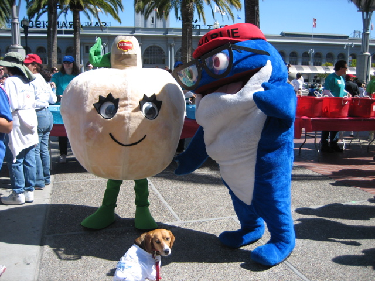

<--Previous
Up
Next-->

While waiting for the walk to start, Hux met these two costumed characters from San Francisco's own Del Monte Corporation: Charlie the Tuna and his lesser-known pal, Upside-Down Creamed Mushroom!